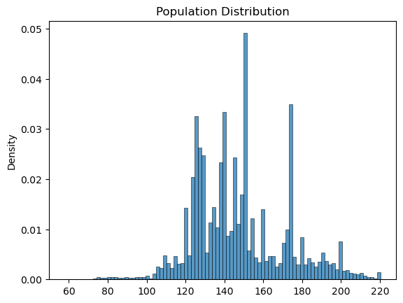
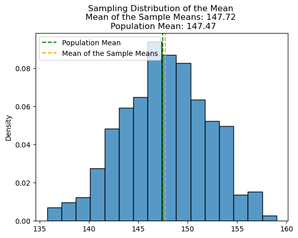
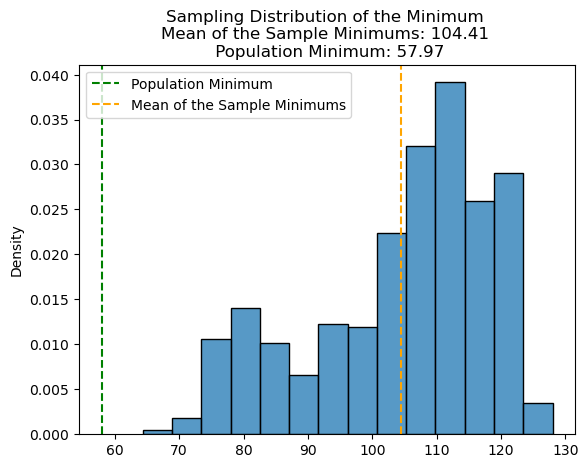
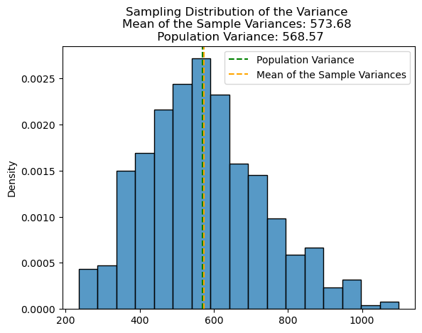
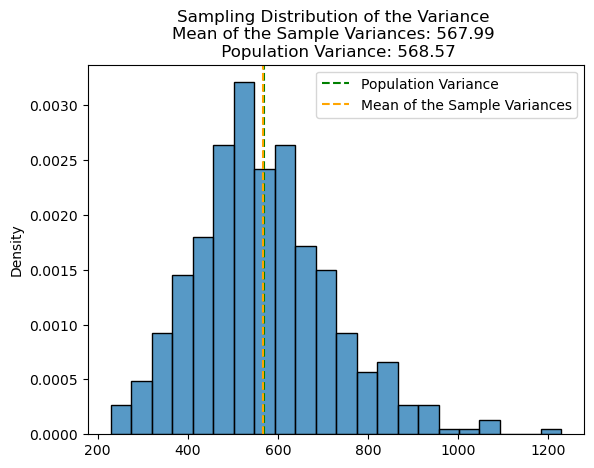

from helper_functions import choose_statistic, population_distribution, sampling_distribution
import numpy as np
import pandas as pd
import matplotlib.pyplot as plt
from scipy import stats
import seaborn as snsGet your dancing shoes ready! You are a DJ trying to make sure you are ready for a big party. You don’t have time to go through all the songs you can work with. Instead, you want to make sure that any sample of 30 songs from your playlist will get the party started. To do this, you will use the power of sampling distributions!
The dataset we are using for this project can be found here.
# task 1: load in the spotify dataset
spotify_data = pd.read_csv('data/spotify_data.csv')
# task 2: preview the dataset
spotify_data.head()| tempo | danceability | energy | instrumentalness | liveness | valence | |
|---|---|---|---|---|---|---|
| 0 | 156.985 | 0.831 | 0.814 | 0.013400 | 0.0556 | 0.3890 |
| 1 | 115.080 | 0.719 | 0.493 | 0.000000 | 0.1180 | 0.1240 |
| 2 | 218.050 | 0.850 | 0.893 | 0.000004 | 0.3720 | 0.0391 |
| 3 | 186.948 | 0.476 | 0.781 | 0.000000 | 0.1140 | 0.1750 |
| 4 | 147.988 | 0.798 | 0.624 | 0.000000 | 0.1660 | 0.5910 |
# task 3: Create a variable called song_tempos that contains the tempo column data
song_tempos = spotify_data.tempo# task 4
Familiarise yourself with `helper_functions.py`# task 5: plot the population distribution
population_distribution(song_tempos)
<Figure size 640x480 with 0 Axes># task 6: sampling distribution of the sample mean
sampling_distribution(song_tempos,30,"Mean")
<Figure size 640x480 with 0 Axes># task 7
# Compare your sampling distribution of the sample means to the population mean. Is the sample mean an unbiased or biased estimator of the population?The sampling distribution of the mean of the sample means is almost identical to the population mean. This demonstrates that the sample mean is an unbiased estimator of the population.
# task 8: sampling distribution of the sample minimum
sampling_distribution(song_tempos,30,"Minimum")

<Figure size 640x480 with 0 Axes># task 9
# Compare your sampling distribution of the sample minimums to the population minimum. Is the sample minimum an unbiased or biased estimator of the population?The sample minimum is clearly a biased estimator of the population given the large disparity between the population and sample minima.
# task 10: sampling distribution of the sample variance
sampling_distribution(song_tempos,30,"Variance")
<Figure size 640x480 with 0 Axes># task 11
# Compare your sampling distribution of the sample variance to the population variance. Does the sample variance appear to be an unbiased or biased estimator of the population?The sampling distribution of the mean of the sample variances is almost identical to the population variance. This demonstrates that the sample variance is an unbiased estimator of the population.
# task 12
# Go to line 16 in helper_functions.py. You should see the following line of code:
np.var(x)Change this to :
np.var(x, ddof=1)Adding this ddof=1 parameter will divide our input by n-1 instead of n, therefore applying the sample variance formula. After changing this line of code, run script.py. Does the sample variance appear to be an unbiased or biased estimator of the population?
sampling_distribution(song_tempos,30,"Variance")
<Figure size 640x480 with 0 Axes>The sampling distribution of the mean of the sample variances is almost identical to the population variance. This demonstrates that the sample variance is an unbiased estimator of the population.
# task 13: calculate the population mean and standard deviation
population_mean = np.mean(song_tempos)
population_std = np.std(song_tempos)
print(population_mean, population_std)147.4740559035575 23.84434149567985# task 14: calculate the standard error
standard_error = population_std/(30 ** 0.5)
print(standard_error)4.3533612353467745# task 15: calculate the probability of observing an average tempo of 140bpm or lower from a sample of 30 songs
prob_less_than_140 = stats.norm.cdf(140,population_mean,standard_error) # value we want to est prob for, est.of pop mean, est. of pop SE
print(prob_less_than_140)0.043003550159587636# task 16: calculate the probability of observing an average tempo of 150bpm or higher from a sample of 30 songs
prob_more_than_150 = 1 - stats.norm.cdf(150,population_mean,standard_error) # value we want to est prob for, est.of pop mean, est. of pop SE
print(prob_more_than_150)0.2808802810182194